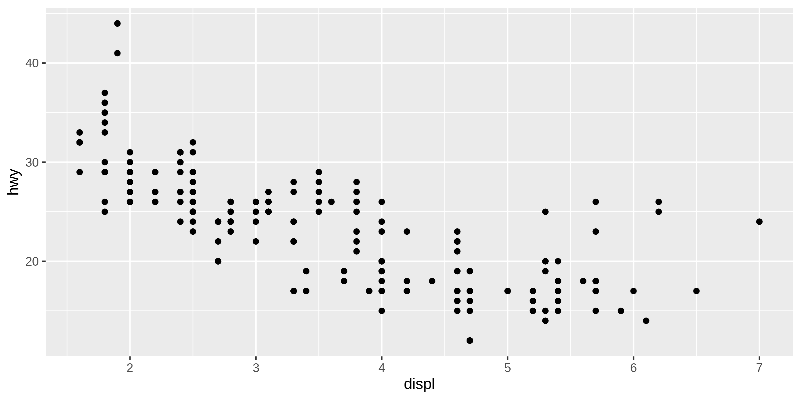

Getting started
The main purpose of GenDoc.jl is to provide users with lots of freedom when generating documents. Achieving this without this package is possible. A simple approach would be to generate a Markdown creating analysis.jl and writing
function fancy_analysis()
# Here some fancy analysis is executed.
return 4
end
text = raw"
---
title: Analysis
---
After a lot of research, I conclude that the average is $(fancy_analysis()).
"
io = open("analysis.md", "w")
write(io, text)
close(io)which creates the file analysis.md containing
---
title: Analysis
---
After a lot of research, I conclude that the average is 4.After doing this for a few documents, the code will become quite repetitive. To avoid the repetition, we can use the following functions and macros.
Showing code blocks
To show the evaluted result with the code block, use @withcb. For example, inside a string, use
$(@withcb begin 1 + 1 end)to obtain the following Markdown
```
1 + 1
```
2After the Markdown renderer, this looks like
1 + 12
This macro is used to show the next examples.
Plots
Plot are first stored as images and then referenced from the generated document. For R plots, use rplot
GenDoc.rplot — Functionrplot(filename; path_prefix, uri_prefix, kwargs...)::StringWrapper around the ggsave function from Tidyverse. Returns a string pointing to the image generated by ggsave. The image is created at path_prefix / filename. To avoid constantly passing path_prefix and url_prefix, consider creating a partial function.
p = R"
library(ggplot2)
ggplot(mpg, aes(displ, hwy)) +
geom_point()
"
path_prefix = joinpath(project_root(), "docs", "src")
rplot("gen_plot.png"; path_prefix = path_prefix, width = 8, height = 4)
Dataframes
df = DataFrame(A = [1, 2], B = [3, 4])
md(df)| A | B |
|---|---|
| 1 | 3 |
| 2 | 4 |